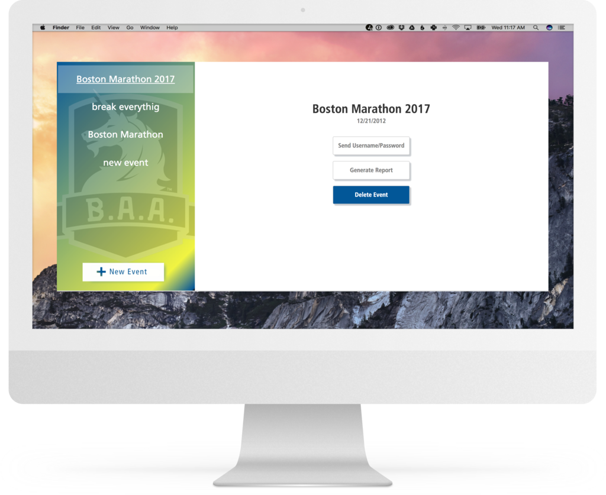

Boston Athletics Association

The Client
The Boston Athletic Association is a non-profit organization with a mission of promoting a healthy lifestyle through sports, especially running. Although mostly known for hosting the Boston Marathon, B.A.A puts on several events per year and actively supports running programs throughout the greater Boston area.
The Project
For a race as big as the Boston Marathon, managing the thousands of volunteers who help run the event is a daunting task. Typically done on paper, Jumbocode is building a mobile application for B.A.A to help expedite the volunteer checkin process.